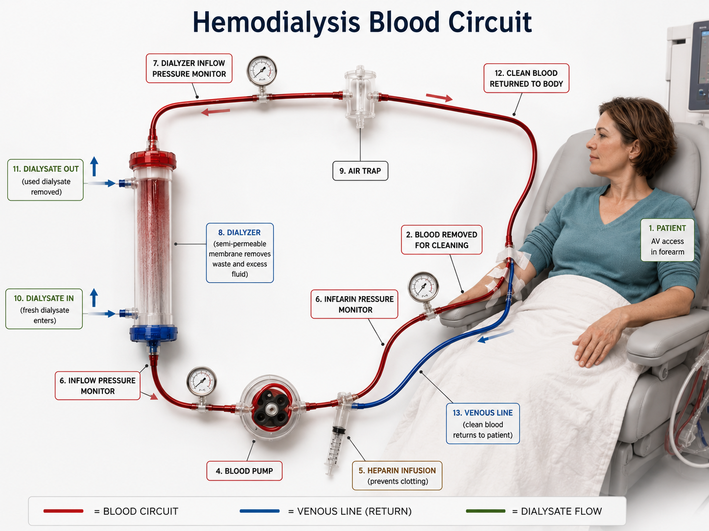
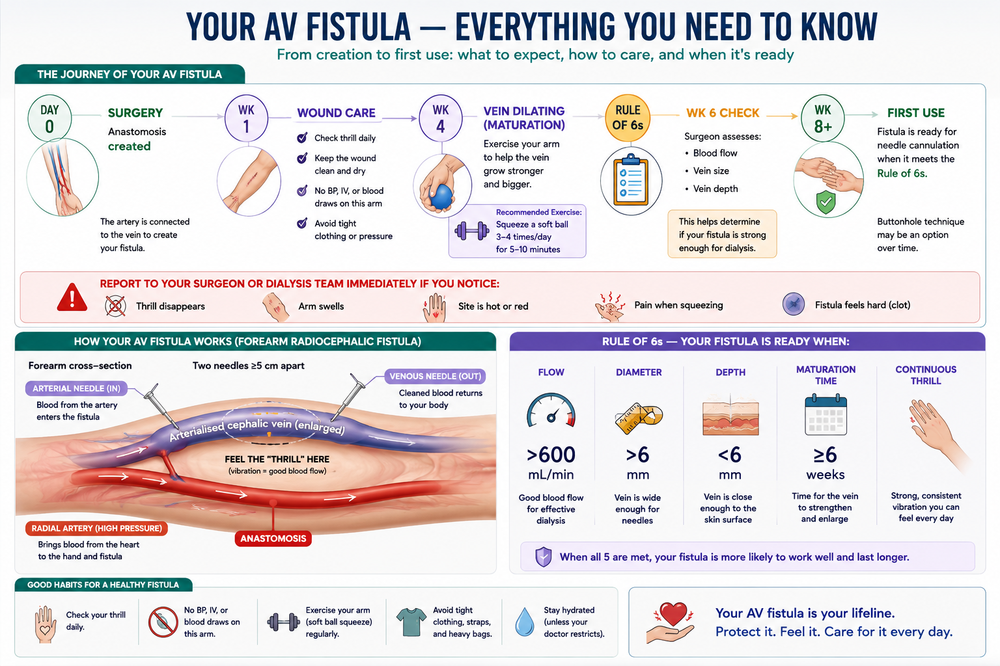
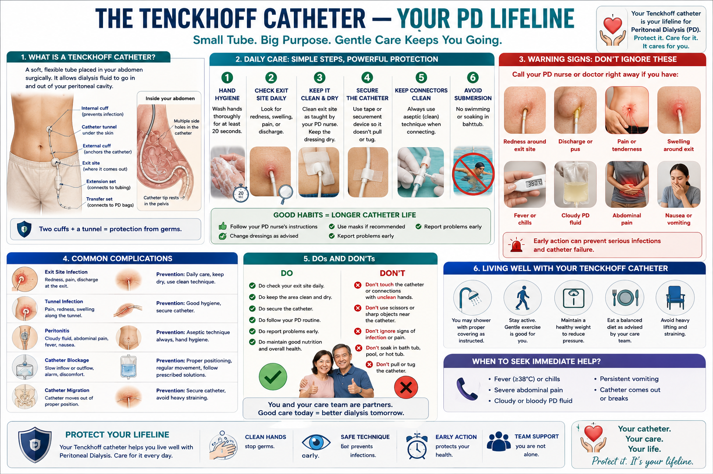
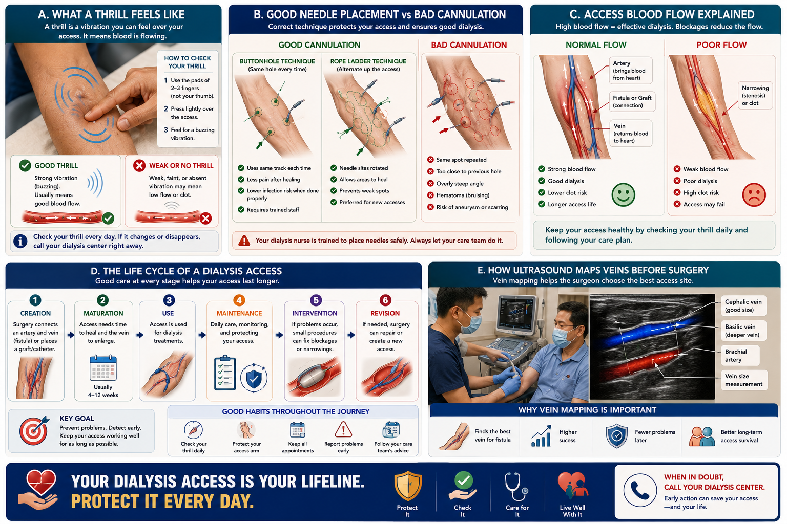
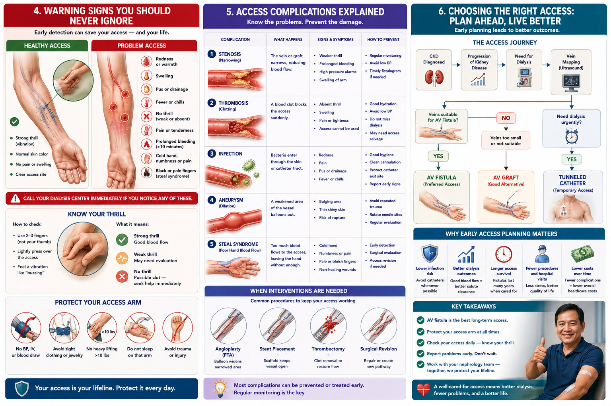
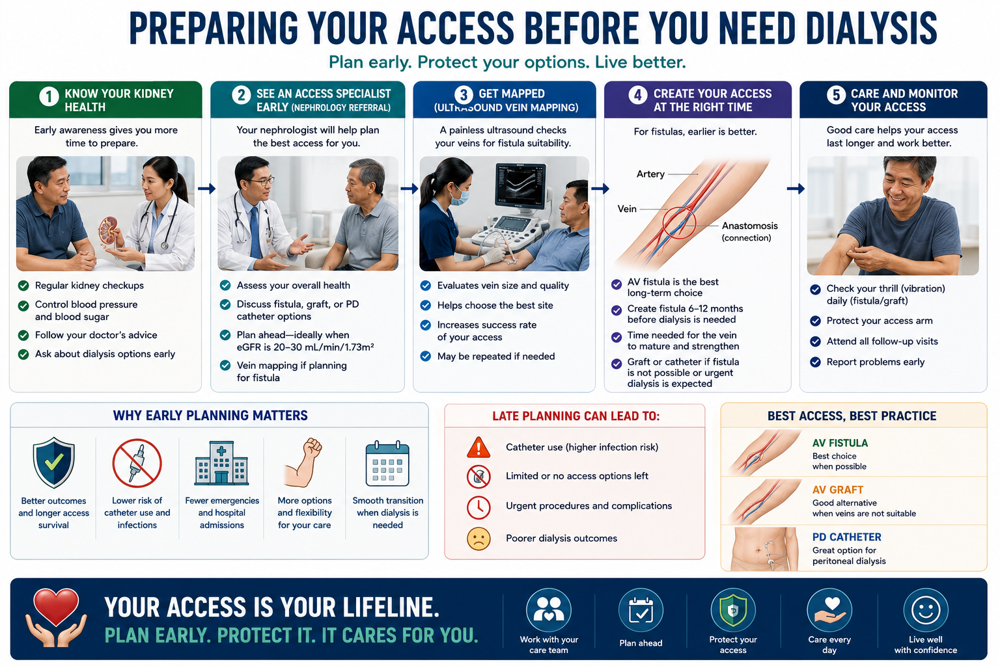

Your Dialysis Access — Why It Is Your Lifeline
Hemodialysis requires rapid blood flow — typically 300–500 mL per minute — that ordinary veins cannot provide. Dialysis access is the surgically created or placed connection between your body and the dialysis machine. Without a functioning access, dialysis cannot happen. Protecting your access is one of the most important things you can do for your survival.

There are three main types of hemodialysis access. They differ in how they are created, how long they last, and how much care they require. Your nephrologist and vascular surgeon will guide you toward the best option based on your vein quality, timeline, and overall condition.
AV Fistula
- Surgically connects an artery directly to a vein
- Takes 6 weeks to 6 months to mature ("ripen")
- Lasts years to decades with proper care
- Lowest infection and clotting risk
- No foreign material in your body
- Best dialysis adequacy and survival outcomes
AV Graft
- Synthetic tube connects artery to vein
- Ready to use in 2–4 weeks
- Used when veins are too small for fistula
- Higher clotting and infection risk than fistula
- Lifespan typically 2–5 years
- Still far better than catheter
Tunneled Catheter (TCC)
- Soft tube placed into a large central vein (jugular or femoral)
- Can be used immediately — no maturation wait
- Highest infection, clotting, and stenosis risk
- Associated with significantly worse survival
- Should be removed as soon as fistula/graft is ready
- Transition plan must be made from day one
The "Fistula First" principle
International guidelines (KDOQI, KDIGO) and your nephrologist's goal is to get every eligible patient a functioning AV fistula. This means planning and creating it before dialysis is urgently needed — ideally at CKD Stage 4, when eGFR is 15–29, so it has time to mature. Every month of catheter use compared to fistula use increases infection risk and reduces long-term survival.
Your AV Fistula — Everything You Need to Know

The AV fistula is created by a vascular surgeon who sews an artery to a nearby vein — usually in the forearm (radiocephalic) or upper arm (brachiocephalic). High-pressure arterial blood flows into the vein, causing it to enlarge and thicken over weeks to months. This enlarged, toughened vein can then be needled repeatedly for dialysis.
The thrill and bruit
A functioning fistula has a characteristic vibration you can feel (thrill) and a whooshing sound you can hear (bruit). Check these every single day. Place two fingers gently over your fistula — you should feel a continuous buzz. If it is absent or weaker than usual, go to your dialysis center or ER immediately.
Maturation — patience is essential
A new fistula may take 6 weeks to 6 months to mature enough for needling. Immature fistulas that are used too early suffer higher complication rates. During this waiting period, doing hand and forearm exercises (squeezing a soft ball) helps develop the vein faster.
Daily Fistula Care — The Non-Negotiables
DO — protect your fistula
- Check the thrill every morning before getting out of bed
- Keep the skin clean — wash gently with soap and water daily
- Moisturize the skin over the fistula to prevent cracking
- Exercise the fistula arm with a soft squeeze ball daily
- Apply firm pressure to needle sites after dialysis — at least 10–15 minutes
- Report any redness, swelling, or warmth to your nurse immediately
- Sleep on your back or opposite side when possible
NEVER DO — these can cost you your fistula
- Never allow blood pressure measurement on the fistula arm
- Never allow IV lines, blood draws, or injections on that arm
- Never wear tight clothing, watches, jewelry, or ID bands on that arm
- Never carry heavy bags or purses on the fistula arm
- Never sleep with full body weight pressing on the fistula arm
- Never apply ice or heat directly over the fistula site
- Never scratch or pick at needle sites
Inform every healthcare worker about your fistula arm
In any clinic, emergency room, or hospital — speak up immediately: "I have a fistula in my left/right arm — please do not use that arm for anything." This single statement has saved countless fistulas. Nurses and doctors in non-dialysis settings may not know to check. Your vigilance is your best protection.
AV Graft — When a Fistula Is Not Possible
When veins are too small, scarred, or fragile for a fistula, a synthetic graft (usually made of PTFE — polytetrafluoroethylene) is used to bridge an artery to a vein. The graft is placed under the skin and can be needled after 2–4 weeks of healing.
Higher clotting risk
Grafts clot more readily than fistulas, especially if blood pressure drops during dialysis or fluid is removed too quickly. Clotted grafts can sometimes be declotted ("thrombolysis") but repeated clotting shortens graft life significantly.
Infection risk
Synthetic material in the body is more susceptible to infection than native tissue. A graft infection is serious — it may require surgical removal. Strict sterile technique during needling and meticulous wound care are essential.
Signs of graft problems
Redness, warmth, or pus at needle sites; swelling of the entire arm; loss of thrill; or a hard, painful lump over the graft. Any of these requires same-day evaluation. Do not wait for your next dialysis session.
Care rules for a graft are similar to a fistula — protect the arm, check daily, and never allow procedures on that arm. The graft site should be examined at every dialysis session by your nurse.
Tunneled Catheter — Temporary but Serious
A tunneled dialysis catheter (TCC) is a soft, flexible tube placed into a large vein — usually the internal jugular vein in the neck — and tunneled under the skin to exit on the chest. It has two lumens: one draws blood out, one returns it. It can be used immediately but carries serious risks.
Catheter-related bloodstream infection (CRBSI)
The most dangerous complication. Bacteria enter through or around the catheter and reach the bloodstream directly. CRBSI causes sepsis, endocarditis, and death. Signs: fever, chills, shaking — especially occurring during or after dialysis. This is a medical emergency requiring immediate evaluation and IV antibiotics.
Central vein stenosis
Catheters damage the vein wall over time, causing scarring and narrowing (stenosis) of the subclavian and jugular veins. This can permanently destroy the veins needed for future fistula creation on that side. This is why catheters must be removed as soon as permanent access is available.
Catheter Exit Site Care — Daily Protocol
Keep the exit site covered and dry at all times
The dressing over the catheter exit site must remain clean, dry, and intact between dialysis sessions. Never get it wet during bathing — cover with waterproof wrap. Do not swim or submerge the catheter in any water.
Dressing changes — only by trained personnel
Exit site dressings should be changed at each dialysis session using strict sterile technique by a trained nurse. Do not attempt to change the dressing at home unless specifically trained and instructed to do so. If the dressing becomes wet, soiled, or falls off, go to your dialysis center immediately.
Protect the catheter from pulling or kinking
The catheter must be secured to prevent accidental dislodgement. Avoid sudden movements that pull on the tubing. Sleep carefully. If the catheter is accidentally pulled or appears to have moved, do not use it — go to your dialysis center or ER immediately.
Antibiotic lock therapy — ask your doctor
Between dialysis sessions, the catheter lumens are filled with a heparin solution (and sometimes antibiotic lock solution) to prevent clotting and infection. Only trained dialysis staff should flush or lock the catheter. Never attempt to flush it yourself unless specifically trained.
Fever + catheter = ER — no exceptions
Any fever (temperature ≥38°C / 100.4°F) in a patient with a dialysis catheter must be evaluated as catheter-related bloodstream infection until proven otherwise. Do not take paracetamol and wait it out. Go to the ER or your dialysis center immediately. CRBSI can become fatal within hours.
The Tenckhoff Catheter — Your PD Lifeline Ang Tenckhoff Catheter — Ang Iyong PD Lifeline Ang Tenckhoff Catheter — Ang Imong PD Lifeline Ing Tenckhoff Catheter — Ing Iyong PD Lifeline

Peritoneal dialysis uses the lining of your abdomen — the peritoneum — as a natural filter. To do this, a soft silicone tube called a Tenckhoff catheter is surgically placed through the abdominal wall into your peritoneal cavity. Unlike HD catheters, the Tenckhoff stays in place permanently as long as you are on PD. Caring for it properly is the single most important thing you can do to stay infection-free. Ang peritoneal dialysis ay gumagamit ng lining ng iyong tiyan — ang peritoneum — bilang natural na filter. Para magawa ito, isang malambot na silicone na tubo na tinatawag na Tenckhoff catheter ay inilalagay sa pamamagitan ng operasyon sa dingding ng tiyan patungo sa iyong peritoneal cavity. Hindi tulad ng HD catheters, ang Tenckhoff ay nananatili habang ikaw ay nasa PD. Ang tamang pag-aalaga nito ang pinaka-importanteng bagay na magagawa mo para maiwasan ang impeksyon. Ang peritoneal dialysis naggamit sa lining sa imong tiyan — ang peritoneum — isip natural nga filter. Aron mahimo kini, usa ka humok nga silicone nga tubo nga gitawag og Tenckhoff catheter ang gibutang pinaagi sa operasyon sa dingding sa tiyan ngadto sa imong peritoneal cavity. Dili sama sa HD catheters, ang Tenckhoff nagpabilin samtang naa ka sa PD. Ang husto nga pag-atiman niini ang labing importanting butang nga mahimo nimo aron magpabilin nga libre sa impeksyon. Ing peritoneal dialysis gagamitan ning lining ning iyong tiyan — ing peritoneum — bilang natural a filter. Para magawa ini, metung a malambot a silicone a tubo a tawag Tenckhoff catheter ing ilalagay king operasyon king dingding ning tiyan patungo king iyong peritoneal cavity. E katulad ning HD catheters, ing Tenckhoff mananatili habang ika nasa PD. Ing tamang pag-alaga kaya ing pinaka-importanteng bagay a magagawa mu para maiwasan ing impeksyon.
Types of Tenckhoff Catheter Mga Uri ng Tenckhoff Catheter Mga Klase sa Tenckhoff Catheter Deng Klase ning Tenckhoff Catheter
Straight vs Swan-Neck Straight vs Swan-Neck Straight vs Swan-Neck Straight vs Swan-Neck
The swan-neck catheter has a permanent downward bend that directs the exit site toward the floor, reducing infection risk and catheter migration. It is the preferred design in most PD programs. The straight catheter is simpler but has a higher rate of exit-site complications. Ang swan-neck catheter ay may permanenteng kurbang pababa na nagdidirekta sa exit site pababa, binabawasan ang panganib ng impeksyon at paglipat ng catheter. Ito ang mas gustong disenyo sa karamihan ng PD program. Ang straight catheter ay mas simple ngunit may mas mataas na rate ng komplikasyon sa exit site. Ang swan-neck catheter adunay permanenteng kurbada pababa nga nagdireksyon sa exit site pababa, nagpakunhod sa risgo sa impeksyon ug paglihok sa catheter. Kini ang gipaboran nga disenyo sa kadaghanan sa PD program. Ang straight catheter mas yano apan adunay mas taas nga rate sa komplikasyon sa exit site. Ing swan-neck catheter atin permanenteng kurbang pababa a nagdidirekta king exit site pababa, babawan ing panganib ning impeksyon at paglipat ning catheter. Iti ing gustong disenyo king karamiwan ning PD program. Ing straight catheter mas simple naman nging matas ing rate ning komplikasyon king exit site.
Single-Cuff vs Double-Cuff Single-Cuff vs Double-Cuff Single-Cuff vs Double-Cuff Single-Cuff vs Double-Cuff
Dacron cuffs anchor the catheter inside the tissue and create a bacteria-blocking seal. Double-cuff catheters have two cuffs — one deep (at the abdominal wall) and one superficial (just under the skin near the exit). Double-cuff is strongly preferred: it reduces tunnel and peritoneal infection rates significantly compared to single-cuff. Ang mga Dacron cuff ay nagpipigil sa catheter sa loob ng tissue at lumilikha ng harang sa bacteria. Ang double-cuff catheter ay may dalawang cuff — isa malalim (sa dingding ng tiyan) at isa mababaw (malapit sa exit site). Ang double-cuff ay mas mas ginagamit: nagpapababa ng mga impeksyon sa tunnel at peritoneal. Ang mga Dacron cuff nagkabgos sa catheter sulod sa tissue ug naghimo og babag sa bakterya. Ang double-cuff catheter adunay duha ka cuff — usa lawom (sa dingding sa tiyan) ug usa mabaw (duol sa exit site). Ang double-cuff mas gipaboran: nagpakunhod sa mga impeksyon sa tunnel ug peritoneal. Ing mga Dacron cuff nagkabgos king catheter king loob ning tissue at gumagawa ning harang king bacteria. Ing double-cuff catheter atin adwang cuff — metung malalim (king dingding ning tiyan) at metung mababaw (malapit king exit site). Ing double-cuff mas gustong gamitin: nagpababa ning deng impeksyon king tunnel at peritoneal.
Break-In Period — The First 2–4 Weeks Break-In Period — Ang Unang 2–4 na Linggo Break-In Period — Ang Unang 2–4 ka Semana Break-In Period — Ing Mipun 2–4 a Simana
Rest the catheter — no exchanges yet Pahintulutang magpahinga ang catheter — wala pang palitan Pahulayon ang catheter — wala pay exchanges Pahulayin ing catheter — ala pang exchanges
After catheter insertion, a 2–4 week break-in period allows the cuffs to become anchored by fibrous tissue and the exit site to heal. During this time, only small-volume flushes are performed by your PD nurse — full-volume exchanges are avoided to prevent leakage and hernia formation around the fresh wound. Pagkatapos ng paglalagay ng catheter, ang 2–4 na linggong break-in period ay nagbibigay-daan sa mga cuff na mapigilan ng fibrous tissue at ang exit site ay gumaling. Sa panahong ito, maliit na volume ng flush lang ang ginagawa ng iyong PD nurse — iniiwasan ang full-volume exchanges para maiwasan ang pagtugas at hernia sa paligid ng sariwang sugat. Human sa pagbutang sa catheter, ang 2–4 ka semanang break-in period nagtugot sa mga cuff nga mapigahan sa fibrous tissue ug ang exit site nga moapas. Sa panahon nga kini, gagmay ra ka volume ang gibuhat sa imong PD nurse — gilikayan ang full-volume exchanges aron malikayan ang pagtulo ug hernia sa palibot sa bag-ong samad. Pagkatapos ning paglalagay ning catheter, ing 2–4 a simanang break-in period nagbibigay-daan king deng cuff na mapigilan ning fibrous tissue at ing exit site na gumaling. King panahong ini, maliit a volume la ngan ning flush ing gagawin ning iyong PD nurse — iniiwasan ing full-volume exchanges para maiwasan ing pagtulo at hernia sa palibot ning sariwang sugat.
Positioning during exchanges Posisyon sa panahon ng exchanges Posisyon sa panahon sa mga exchange Posisyon king panahon ning exchanges
Perform exchanges lying flat or semi-reclined during the break-in period to reduce intra-abdominal pressure. After healing is confirmed, most patients can perform CAPD exchanges sitting or standing. APD (automated PD) runs while you sleep — positioning is supine. Gumawa ng exchanges nang nakahiga o semi-reclined sa panahon ng break-in upang mabawasan ang presyon sa loob ng tiyan. Pagkatapos ng pagbabago, karamihan sa mga pasyente ay maaaring gumawa ng CAPD exchanges habang nakaupo o nakatayo. Ang APD (automated PD) ay tumatakbo habang natutulog — ang posisyon ay nakahiga. Buhata ang mga exchange nga naghigda o semi-reclined sa panahon sa break-in aron makunhuran ang presyon sulod sa tiyan. Human sa pag-ayo, kadaghanan sa mga pasyente makahimo og CAPD exchange nga naglingkod o nagtindog. Ang APD nagdagan samtang natulog — ang posisyon supine. Gawin ing exchanges habang nakahandusay o semi-reclined king panahon ning break-in para mabawasan ing presyon king loob ning tiyan. Pagkatapos ning paggaling, karamihan sa mga pasyente maari nang gumawa ning CAPD exchanges habang nakaupo o nakatayo. Ing APD tumatakbo habang natutulog — ing posisyon nakahiga.
Manage constipation — it moves your catheter Pamahalaan ang constipation — inililipat nito ang iyong catheter Pagdumala sa constipation — nagbalhin kini sa imong catheter Alayan ing constipation — ilipat na ing iyong catheter
A full bowel presses against the catheter tip, pushing it out of position (catheter migration). This causes slow or incomplete drainage and may require an interventional procedure to reposition it. Maintain a regular bowel habit — your PD nurse or doctor may prescribe a stool softener or osmotic laxative during break-in and beyond. Ang puno na bituka ay nagpipigil sa dulo ng catheter, inililipat ito sa labas ng posisyon (catheter migration). Ito ay nagdudulot ng mabagal o hindi kumpletong drainage at maaaring mangailangan ng pamamaraan upang maibalik ito. Panatilihin ang regular na pagtatabol — ang iyong PD nurse o doktor ay maaaring magreseta ng stool softener o osmotic laxative. Ang puno nga tinai nagpugos sa tip sa catheter, nagbalhin niini gawas sa posisyon (catheter migration). Kini nagdala og hinay o dili kumpleto nga drainage ug mahimong manginahanglan og prosedura aron ibalik kini. Hupti ang regular nga pagtabok — ang imong PD nurse o doktor mahimong mag-order og stool softener o osmotic laxative. Ing puno a bituka nagtutulak king dulo ning catheter, inililipat ya king luwas ning posisyon (catheter migration). Iti nagdudulot ning mabagal o hindi kumpletong drainage at maaaring mangailangan ning pamamaraan para ibalik ya. Panatilihin ing regular a pagtatabol — ing iyong PD nurse o doktor maaring mag-reseta ning stool softener o osmotic laxative.
No heavy lifting during break-in Huwag magbuhat ng mabigat sa panahon ng break-in Ayaw pagbayaw og bug-at sa panahon sa break-in Ala mabuhat ning mabigat king panahon ning break-in
Straining, lifting more than 5 kg, or vigorous activity raises intra-abdominal pressure and risks hernia formation at the catheter insertion site — one of the most common early complications of PD. After full healing (typically 4–6 weeks), gradually return to normal activity as guided by your PD team. Ang pag-igting, pagbuhat ng mahigit 5 kg, o masigla na aktibidad ay nagpapataas ng presyon sa loob ng tiyan at nagdudulot ng panganib na hernia sa lugar ng pagpasok ng catheter — isa sa mga pinakakaraniwang maagang komplikasyon ng PD. Pagkatapos ng buong paggaling (karaniwang 4–6 na linggo), unti-unting bumalik sa normal na aktibidad ayon sa gabay ng iyong PD team. Ang pagpilit, pagbayaw og labaw sa 5 kg, o aktibong kalihokan nagpataas sa presyon sulod sa tiyan ug nagdala og risgo sa hernia sa dapit nga gibutangan sa catheter — usa sa labing sagad nga sayo nga komplikasyon sa PD. Human sa tibuok pagpas-an (kasagaran 4–6 ka semana), hinay-hinay nga balik sa normal nga kalihokan sumala sa giya sa imong PD team. Ing pag-igting, pagbuhat ning mahigit 5 kg, o masigla a aktibidad nagtataas ning presyon king loob ning tiyan at nagdudulot ning panganib a hernia king lugar ning pagpasok ning catheter — metung king pinaka-karaniwang magang komplikasyon ning PD. Pagkatapos ning buong paggaling (karaniwang 4–6 a simana), unti-unting bumalik sa normal a aktibidad ayon king gabay ning iyong PD team.
Exit Site Care — Daily Protocol Pag-aalaga ng Exit Site — Araw-araw na Protokol Pag-atiman sa Exit Site — Adlaw-adlaw nga Protokol Pag-alaga ning Exit Site — Adlaw-adlaw a Protokol
Clean daily — every single day without fail Linisin araw-araw — bawat araw nang walang palya Limpyuhi matag adlaw — matag adlaw nga walay kulang Linisin adlaw-adlaw — bawat adlaw alang-alang
Clean the exit site daily using sterile technique: wash hands thoroughly first, then gently clean the skin around the catheter with normal saline or chlorhexidine solution as directed by your PD nurse. Remove any crusting carefully. Apply mupirocin ointment to the exit site if prescribed — this dramatically reduces Staphylococcus aureus exit-site infections and peritonitis. Cover with a clean sterile gauze and secure with tape. Linisin ang exit site araw-araw gamit ang sterile technique: hugasan muna nang mabuti ang mga kamay, pagkatapos ay dahan-dahang linisin ang balat sa paligid ng catheter gamit ang normal saline o chlorhexidine solution ayon sa itinuro ng iyong PD nurse. Alisin ang anumang tigas na dumi nang maingat. Mag-apply ng mupirocin ointment sa exit site kung inireseta — ito ay lubhang nagpapababa ng impeksyon ng exit site at peritonitis na dulot ng Staphylococcus aureus. Takpan ng malinis na sterile gauze at i-secure ng tape. Limpyuhi ang exit site matag adlaw gamit ang sterile technique: hugasi pag-ayo ang mga kamot una, unya hinay-hinnay limpyuhi ang panit sa palibot sa catheter gamit ang normal saline o chlorhexidine solution sumala sa giya sa imong PD nurse. Kuhaa ang bisan unsang nagahi nga hugaw nga mabination. Mag-apply og mupirocin ointment sa exit site kon giresetahan — kini nagpakunhod kaayo sa mga impeksyon sa exit site ug peritonitis gikan sa Staphylococcus aureus. Tabunan og malinis nga sterile gauze ug i-secure og tape. Linisin ing exit site adlaw-adlaw gamit sterile technique: hugasan muna nang maliwala ing mga kamay, pagkatapos dahan-dahan linisin ing balat sa palibot ning catheter gamit normal saline o chlorhexidine solution ayon king itinuro ning iyong PD nurse. Alisin ing anumang tigas a dumi nang maingat. Mag-apply ning mupirocin ointment king exit site nung iniresetang — iti lubhang nagpapababa ning impeksyon ning exit site at peritonitis a gawa ning Staphylococcus aureus. Takpan ning malinis a sterile gauze at i-secure ning tape.
Keep it dry — no baths, pools, or open water Panatilihing tuyo — walang paliligo sa bañera, pool, o bukas na tubig Hupti kini nga uga — walay paligo sa banyo, pool, o bukas nga tubig Panatilihing tuyo — ala paliligo king bañera, pool, o bukas a tubig
Showering is allowed — cover the exit site with a waterproof dressing or cling wrap. Bathing in a tub, swimming in pools, rivers, lakes, or the sea is permanently prohibited. Submerging the exit site in water — even briefly — creates a direct pathway for water-borne bacteria into the peritoneal cavity, causing potentially fatal peritonitis. Ang paliguan sa shower ay pinapayagan — takpan ang exit site ng waterproof na benda o cling wrap. Ang paliligo sa bañera, paglangoy sa pool, ilog, lawa, o dagat ay permanenteng ipinagbabawal. Ang pagsasabak ng exit site sa tubig — kahit sandali — ay lumilikha ng direktang landas para sa mga bacteria sa tubig patungo sa peritoneal cavity, na nagdudulot ng potensyal na nakamamatay na peritonitis. Ang paligoan pinaagi sa shower gitugotan — tabunan ang exit site og waterproof nga benda o cling wrap. Ang paligo sa bañera, paglangoy sa pool, suba, linaw, o dagat permanenteng gidili. Ang paglubog sa exit site sa tubig — bisan kadiyot — nagmugna og direktang dalan alang sa mga bacteria sa tubig ngadto sa peritoneal cavity, nagdala sa potensyal nga nakamamatay nga peritonitis. Ing paliguan king shower pinapayagan — takpan ing exit site ning waterproof a benda o cling wrap. Ing paliligo king bañera, paglangoy king pool, ilog, lawa, o dagat permanenteng ipinagbabawal. Ing pagsasabak ning exit site king tubig — maski sandali — gumagawa ning direktang landas para king mga bacteria king tubig patungo king peritoneal cavity, nagdudulot ning potensyal a nakamamatay a peritonitis.
Never pull, twist, or put tension on the catheter Huwag kailanman hilahin, paikutin, o lagyan ng tensyon ang catheter Ayaw gyud pagbitad, paglikok, o pagbutang og tensyon sa catheter Alang kailanman hilahin, paikutin, o lagyan ning tensyon ing catheter
Trauma to the catheter — pulling, catching on clothing, accidental yanking — damages the cuffs and enlarges the exit site, making infection far more likely. Secure the catheter to your abdomen with tape between exchanges. Sleep with awareness of the tube. Use loose, comfortable clothing that does not press on the exit site. Ang trauma sa catheter — paghila, pagkapit sa damit, aksidenteng paghila — nagpapasama sa mga cuff at nagpapalaki sa exit site, na ginagawang mas malamang ang impeksyon. I-secure ang catheter sa iyong tiyan gamit ang tape sa pagitan ng mga exchanges. Matulog nang may kamalayan sa tubo. Gumamit ng maluwag at komportableng damit na hindi pumipigil sa exit site. Ang trauma sa catheter — pagbitad, pagkaon sa bisti, aksidenteng pagguyod — nagdaot sa mga cuff ug nagpadako sa exit site, nga naghimo sa impeksyon nga mas lagmit. I-secure ang catheter sa imong tiyan gamit og tape tali sa mga exchange. Katulog nga adunay kahibalo sa tubo. Gamita ang maluwag ug komportable nga bisti nga wala magpugos sa exit site. Ing trauma king catheter — paghila, pagkapit king damit, aksidenteng paghila — nagpapasama king deng cuff at nagpapalaki king exit site, ginagawa ing impeksyon na mas malamang. I-secure ing catheter king iyong tiyan gamit tape sa pag-itan ning deng exchanges. Matulog nang may kamalayan king tubo. Gumamit ning maluwag at komportableng damit a hindi pumipigil king exit site.
MRSA nasal screening — ask your PD team MRSA nasal screening — itanong sa iyong PD team MRSA nasal screening — pangutan-a ang imong PD team MRSA nasal screening — itanong king iyong PD team
Many patients carry Staphylococcus aureus in their nose without knowing it — this is a leading cause of exit-site infection and peritonitis. A simple nasal swab identifies carriers. If positive, your doctor will prescribe mupirocin nasal ointment (applied twice daily for 5 days each month) to suppress nasal carriage and dramatically reduce your infection risk. Maraming pasyente ang may Staphylococcus aureus sa kanilang ilong nang hindi nalalaman — ito ay isang nangungunang dahilan ng impeksyon sa exit site at peritonitis. Ang simpleng nasal swab ay nagtatukoy ng mga carrier. Kung positibo, ang iyong doktor ay magreseta ng mupirocin nasal ointment (inilalapat nang dalawang beses araw-araw sa loob ng 5 araw bawat buwan) upang mapigilan ang nasal carriage at lubhang mabawasan ang iyong panganib ng impeksyon. Daghan nga mga pasyente ang nagdala sa Staphylococcus aureus sa ilang ilong nga wala mahibalo — kini usa sa nanguna nga hinungdan sa impeksyon sa exit site ug peritonitis. Ang yano nga nasal swab nag-ila sa mga carrier. Kon positibo, ang imong doktor magreseta og mupirocin nasal ointment (gibutang kaduha sa adlaw sulod sa 5 ka adlaw matag buwan) aron mapugngan ang nasal carriage ug makunhuran ang imong risgo sa impeksyon. Daghan pasyente ing nagdadala ning Staphylococcus aureus king ilong da nang hindi nila nalalaman — iti metung king nangunguna a dahilan ning impeksyon king exit site at peritonitis. Ing simpleng nasal swab nagtatukoy ning deng carrier. Nung positibo, ing iyong doktor magreseta ning mupirocin nasal ointment (inilalagay nang adwang beses adlaw-adlaw king loob ning 5 adlaw bawat buwan) para mapigilan ing nasal carriage at lubhang mabawasan ing iyong panganib ning impeksyon.
Recognising PD-Specific Complications Pagtuklas ng mga Komplikasyon na Tukoy sa PD Pag-ila sa mga Komplikasyon nga Tukoy sa PD Pagtuklas ning deng Komplikasyon a Tukoy king PD
| ComplicationKomplikasyonKomplikasyonKomplikasyon | Warning SignsMga BabalaMga SenyalesDeng Babala | ActionAksyonAksyonAksyon |
|---|---|---|
| PeritonitisPeritonitisPeritonitisPeritonitis | Cloudy dialysate bag, abdominal pain, fever, nauseaMalabo na bag ng dialysate, sakit sa tiyan, lagnat, pagduwalMabaho nga bag sa dialysate, sakit sa tiyan, hilanat, nahibongMalabo a bag ning dialysate, sakit king tiyan, lagnat, pagduwal | Call your PD center immediately — same day. Save the cloudy bag for culture.Tumawag sa iyong PD center kaagad — sa araw na iyon. Itago ang malabong bag para sa kultura.Tawgi ang imong PD center dayon — sa mao nga adlaw. Tipigi ang mabahong bag alang sa kultura.Tawagan ing iyong PD center dayon — king mismong adlaw. Itago ing malabong bag para king kultura. |
| Exit-site infectionImpeksyon sa exit siteImpeksyon sa exit siteImpeksyon king exit site | Redness, swelling, pain, crust, or pus around the catheter exitPamumula, pamamaga, sakit, tigas na dumi, o nana sa paligid ng exit ng catheterPagpula, paghubag, sakit, tigas nga hugaw, o nana sa palibot sa exit sa catheterPamumula, pamamaga, sakit, tigas a dumi, o nana sa palibot ning exit ning catheter | Contact PD team within 24 hours. Do not self-treat. A swab is needed for culture.Makipag-ugnayan sa PD team sa loob ng 24 na oras. Huwag mag-self-treat. Kailangan ng swab para sa kultura.Makig-ugnayan sa PD team sulod sa 24 ka oras. Ayaw pagtambal sa imong kaugalingon. Kinahanglan og swab alang sa kultura.Makipag-ugnayan king PD team king loob ning 24 a oras. Ala mag-self-treat. Kailangan ning swab para king kultura. |
| Tunnel infectionImpeksyon sa tunnelImpeksyon sa tunnelImpeksyon king tunnel | Pain, redness, or swelling along the subcutaneous tunnel track (between exit and abdominal wall)Sakit, pamumula, o pamamaga sa kahabaan ng subcutaneous tunnel trackSakit, pagpula, o paghubag sa dayon sa subcutaneous tunnel trackSakit, pamumula, o pamamaga sa kahabaan ning subcutaneous tunnel track | Urgent PD team review — tunnel infection often requires catheter removal. Early treatment may save the catheter.Agarang pagsusuri ng PD team — ang impeksyon sa tunnel ay madalas na nangangailangan ng pag-alis ng catheter. Ang maagang paggamot ay maaaring makapagligtas ng catheter.Dinalian nga pagsusi sa PD team — ang impeksyon sa tunnel kasagaran nanginahanglan og pagtangtang sa catheter. Ang sayo nga pagtambal mahimong makaluwas sa catheter.Agarang pagsusuri ning PD team — ing impeksyon king tunnel madalas na nangangailangan ning pag-alis ning catheter. Ing maagang paggamot maaring makapagligtas ning catheter. |
| Catheter migrationPaglipat ng catheterPaglihok sa catheterPaglipat ning catheter | Slow or one-sided drainage; pain during infusion; abdominal X-ray shows tip out of pelvisMabagal o isang-tabing drainage; sakit sa panahon ng infusion; X-ray ng tiyan nagpapakita ng dulo na labas ng pelvisHinay o usa ka kilid nga drainage; sakit sa panahon sa infusion; X-ray sa tiyan nagpakita og tip gawas sa pelvisMabagal o isang-tabi a drainage; sakit king panahon ning infusion; X-ray ning tiyan nagpapakita ning dulo a luwas ning pelvis | Report to PD team. Laxatives often correct mild migration. Persistent cases need laparoscopic repositioning.Iulat sa PD team. Ang mga laxative ay madalas na nagwawasto ng banayad na paglipat. Ang mga paulit-ulit na kaso ay nangangailangan ng laparoscopic repositioning.Ireport sa PD team. Ang mga laxative kasagaran nagkoreksyon sa hinay nga paglihok. Ang mga paulit-ulit nga kaso nanginahanglan og laparoscopic repositioning.Iulat king PD team. Deng laxative madalas nagwawasto ning banayad a paglipat. Deng paulit-ulit a kaso nangangailangan ning laparoscopic repositioning. |
| HerniaHerniaHerniaHernia | Bulge near navel, incision site, or groin; worsens when upright or during infusionBukol malapit sa pusod, lugar ng hiwa, o singit; lumalala kapag nakatayo o sa panahon ng infusionUhong duol sa pulsod, lugar sa hiwa, o singot; mosamot kung nagtindog o sa panahon sa infusionBukol malapit king pusod, lugar ning hiwa, o singit; lumalala nung nakatayo o king panahon ning infusion | Report early. Small hernias can be managed with smaller fill volumes. Large or symptomatic hernias need surgical repair — PD may need to be paused.Iulat nang maaga. Ang maliliit na hernia ay maaaring pamahalaan sa mas maliit na volume. Ang malalaki o sintomatikong hernia ay nangangailangan ng surgical repair — maaaring kailangang i-pause ang PD.Ireport aga. Ang gagmay nga hernia mapamahalaang gamit og gagmay nga volume. Ang dagko o symptomatic nga hernia nanginahanglan og surgical repair — ang PD mahimong i-pause.Iulat nang maaga. Deng maliliit a hernia maaring pamahalaang gamit ning mas maliit a volume. Deng malaki o symptomatikong hernia nangangailangan ning surgical repair — maaaring kailangang i-pause ing PD. |
Cloudy bag = peritonitis until proven otherwise Malabong bag = peritonitis hanggang mapatunayan na hindi Mabahong bag = peritonitis hangtod mapamatud-an nga dili Malabong bag = peritonitis anggiang mapatunayan na hindi
If your drained dialysate bag is cloudy, whitish, or has visible particles — call your PD center immediately, even at night, even on a weekend. Do not perform the next exchange until you have spoken to your team. Save the cloudy bag and bring it in — it will be sent for cell count and culture to identify the organism and guide antibiotic treatment. Untreated peritonitis causes permanent membrane damage and is the leading cause of PD technique failure. Kung ang iyong na-drain na bag ng dialysate ay malabo, puting-puti, o may mga makikitang particle — tumawag kaagad sa iyong PD center, kahit gabi, kahit weekend. Huwag gumawa ng susunod na exchange hangga't hindi ka nakikipag-usap sa iyong team. Itago ang malabong bag at dalhin — ipapadala ito para sa cell count at kultura upang matukoy ang organismo at gabayan ang antibiotic na paggamot. Ang hindi ginagamot na peritonitis ay nagdudulot ng permanenteng pinsala sa membrane at ang nangungunang dahilan ng pagpalya ng PD technique. Kon ang imong gi-drain nga bag sa dialysate mabaho, maputi-puti, o adunay makitang mga particle — tawga dayon ang imong PD center, bisan gabii, bisan weekend. Ayaw buhata ang sunod nga exchange hangtod nakigsulti ka sa imong team. Tipigi ang mabahong bag ug dad-a — ipadala kini alang sa cell count ug kultura aron mahibal-an ang organismo ug giya ang antibiotic nga pagtambal. Ang wala gitambal nga peritonitis nagdala og permanenteng kadaot sa membrane ug ang nanguna nga hinungdan sa pagpalya sa PD technique. Nung ing iyong na-drain a bag ning dialysate malabo, puting-puti, o atin makitang deng particle — tawagan dayon ing iyong PD center, maski gabii, maski weekend. Ala gumawa ning susunod a exchange anggiang hindi ka nakikipag-usap king iyong team. Itago ing malabong bag at dalhin — ipapadala iti para king cell count at kultura para matukoy ing organismo at gabayan ing antibiotic a paggamot. Ing hindi ginagamot a peritonitis nagdudulot ning permanenteng pinsala king membrane at ing nangunguna a dahilan ning pagpalya ning PD technique.
Daily Access Care — What to Do Every Day

| Task | Fistula / Graft | Catheter | Frequency |
|---|---|---|---|
| Check thrill / bruit | Feel for vibration, listen for whoosh | Not applicable | Every morning |
| Inspect skin | Look for redness, swelling, bruising around the access | Check exit site through dressing for leakage or blood | Daily |
| Clean the area | Gentle soap and water wash; pat dry | Do not disturb dressing — keep dry | Daily |
| Moisturize | Apply unscented lotion to skin over fistula/graft | Not on or near exit site | Daily after washing |
| Exercise | Soft ball squeeze 3 sets of 20 repetitions to develop fistula | Not applicable | Daily (fistula maturation) |
| Weigh yourself | Same scale, same time every morning — track fluid gain between sessions | Every morning | |
| Record blood pressure | Fistula arm: never use. Opposite arm or thigh only. | As directed by doctor | |
Access Complications — Early Recognition Saves Your Access

Thrombosis (clotting) — most common fistula emergency
Signs: loss of thrill and bruit, the access feels hard and cord-like, no pulsatile flow. Time is critical — a clotted fistula can sometimes be salvaged with urgent thrombectomy within 24–48 hours. After that, permanent loss becomes more likely. Go immediately — do not wait.
Infection — redness, warmth, pus
Early infection around needle sites: redness, mild swelling, tenderness — report at next session. Advanced infection: pus, spreading redness, fever, red streaks tracking up the arm — go to ER immediately. A fistula infection can spread to the bloodstream (bacteremia) and cause endocarditis.
Stenosis (narrowing) — high recirculation, poor flows
Often detected by the dialysis team (poor blood flow rates, high venous pressure alarms, inadequate dialysis adequacy). You may notice the arm feels different or the fistula seems smaller. Treated with balloon angioplasty (PTA) — a procedure done by an interventional radiologist or vascular surgeon.
Aneurysm — bulging, thin-skinned, pulsating swelling
Repeated needle punctures in the same spot can weaken the vein wall, causing an aneurysm (bulge). Small, stable aneurysms are monitored. A rapidly enlarging aneurysm with thin, shiny, discolored skin overlying it risks rupture — a life-threatening emergency requiring immediate surgery.
Steal syndrome — hand coldness, pain, weakness
The fistula "steals" blood from the hand by diverting it through the access circuit. Signs: coldness, numbness, pain, or weakness in the hand or fingers on the fistula side — especially during dialysis. Severe steal causes ischemia and can lead to tissue loss. Report any hand symptoms immediately.
Preparing Your Access Before You Need Dialysis

The single most important thing a CKD Stage 4 patient can do is plan and create access before dialysis becomes urgently needed. Starting dialysis through an emergency catheter is associated with higher infection rates, longer hospitalizations, and worse survival compared to starting through a mature fistula.
Preserve your veins — starting today
Every blood draw, IV line, or PICC placed in your forearm or antecubital (elbow) veins can damage vessels needed for future fistula creation. Once you are in CKD Stage 3 or beyond, request all blood draws from the back of the hand and all IVs from the forearm only as a last resort. Protect both arms if possible, but especially your non-dominant arm.
Vascular mapping — know your veins before surgery
Before fistula creation, a vascular surgeon performs Doppler ultrasound mapping of your veins and arteries. This determines which vessels are suitable and which surgical configuration will work best. The results guide whether a forearm or upper arm fistula is more likely to mature successfully.
Time the surgery at Stage 4 — not Stage 5
Fistula surgery should ideally happen when eGFR is 15–20 mL/min — giving 3–6 months for maturation before dialysis is urgently needed. Waiting until eGFR falls below 10 often forces a catheter start, with all its associated risks.
Exercise your fistula arm after surgery
After surgery and once the wound has healed (about 1–2 weeks), begin squeezing a soft rubber ball or stress ball for 3 sets of 20 repetitions, 3–4 times daily. This promotes blood flow and helps the fistula vein enlarge and mature faster. Apply warmth (warm towel — not hot) to the fistula arm for 15–20 minutes before exercise to increase flow.
When to Seek Immediate Care
⚠ Go to your dialysis center or ER immediately for:

W. G. M. Rivero, MD, FPCP, DPSN
Specialist in Internal Medicine, Nephrology, and Clinical Nutrition.Espesyalista sa Panloob na Medisina, Nefrolohiya, at Klinikal na Nutrisyon.Espesyalista sa Internal nga Medisina, Nefrolohiya, ug Klinikal nga Nutrisyon. Medical Director, St. John Biocare Center and St. Josef Renal Care Foundation.
PRC 0105184 · seriousmd.com/doc/williamrivero ·